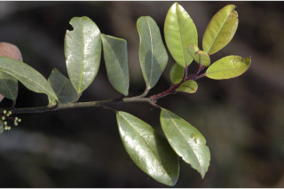
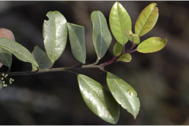
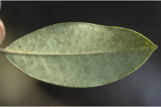
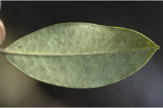

| Habit : | Evergreen trees , up to 20 m tall. |
| Leaves : | Leaves simple , alternate , spiral ; petioles 0.7 cm long, canaliculate ; lamina 3-6.5 x 1-3 cm, elliptic sometimes obovate , apex acuminate , base acute , margin entire , glabrous , coriaceous ; midrib canaliculate ; secondary_nerves 6 pairs; tertiary_nerves obscure . |
| Inflorescence / Flower : | Flowers unisexual , dioecious ; male flowers white, in short pedunculate cymes , peduncles 0.8-1.25 cm long; female flowers in axillary fascicles . |
| Fruit and Seed : | Drupe , globose , red, apiculate ; locule 6, each 1-seeded . |
 

 
